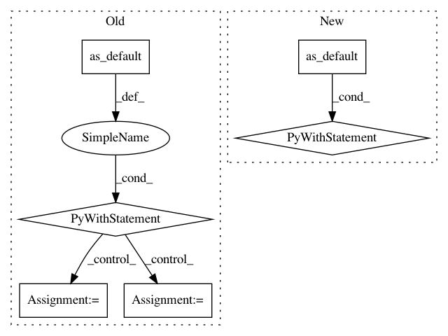

0645b446e61e3e51e00c20a2f925111dcd29e264,examples/image_retraining/retrain.py,,export_model,#Any#Any#Any#,947
Before Change
// The SavedModel should hold the eval graph.
sess, in_image, _, _, _, _ = build_eval_session(module_spec, class_count)
graph = sess.graph
with graph.as_default():
inputs = {"image": tf.saved_model.utils.build_tensor_info(in_image)}
out_classes = sess.graph.get_tensor_by_name("final_result:0")
outputs = {
"prediction": tf.saved_model.utils.build_tensor_info(out_classes)
}
signature = tf.saved_model.signature_def_utils.build_signature_def(
inputs=inputs,
outputs=outputs,
method_name=tf.saved_model.signature_constants.PREDICT_METHOD_NAME)
legacy_init_op = tf.group(tf.tables_initializer(), name="legacy_init_op")
// Save out the SavedModel.
builder = tf.saved_model.builder.SavedModelBuilder(saved_model_dir)
builder.add_meta_graph_and_variables(
sess, [tf.saved_model.tag_constants.SERVING],
signature_def_map={
tf.saved_model.signature_constants.
DEFAULT_SERVING_SIGNATURE_DEF_KEY:
signature
},
legacy_init_op=legacy_init_op)
builder.save()
def main(_):
// Needed to make sure the logging output is visible.
// See https://github.com/tensorflow/tensorflow/issues/3047
tf.logging.set_verbosity(tf.logging.INFO)
After Change
// The SavedModel should hold the eval graph.
sess, in_image, _, _, _, _ = build_eval_session(module_spec, class_count)
with sess.graph.as_default() as graph:
tf.saved_model.simple_save(
sess,
saved_model_dir,
inputs={"image": in_image},
outputs={"prediction": graph.get_tensor_by_name("final_result:0")},
legacy_init_op=tf.group(tf.tables_initializer(), name="legacy_init_op")
)
def main(_):
// Needed to make sure the logging output is visible.
// See https://github.com/tensorflow/tensorflow/issues/3047
tf.logging.set_verbosity(tf.logging.INFO)
In pattern: SUPERPATTERN
Frequency: 3
Non-data size: 6
Instances
Project Name: tensorflow/hub
Commit Name: 0645b446e61e3e51e00c20a2f925111dcd29e264
Time: 2018-07-31
Author: robbie.haertel@gmail.com
File Name: examples/image_retraining/retrain.py
Class Name:
Method Name: export_model
Project Name: GPflow/GPflow
Commit Name: c283fecb350a6647a07698fb2af7a4a1c2b1077c
Time: 2018-03-27
Author: art.art.v@gmail.com
File Name: gpflow/training/tensorflow_optimizer.py
Class Name: _TensorFlowOptimizer
Method Name: minimize
Project Name: deepchem/deepchem
Commit Name: c96af58e6ab2f85626e51a331e8479da49329f0e
Time: 2017-01-18
Author: joegomes@stanford.edu
File Name: deepchem/models/tensorflow_models/__init__.py
Class Name: TensorflowClassifier
Method Name: predict_proba_on_batch